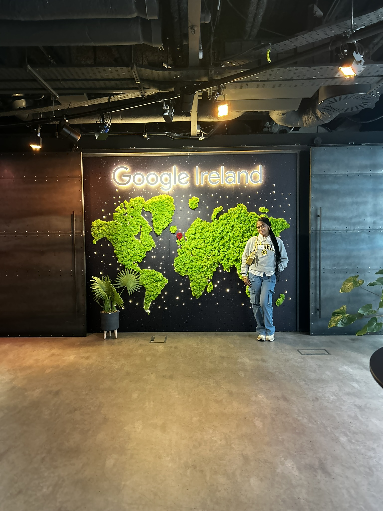
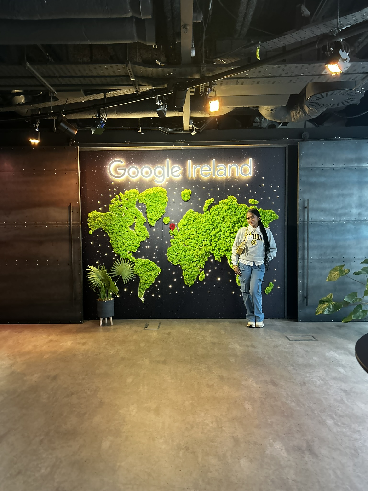

About Me ☘

Hey there! I'm Ansileen Washington, and I'm super excited to welcome you to my digital travel log all about my study abroad adventure in Ireland! I'll be taking you along as I wander through the lively streets of Dublin, explore the historic charm of Kilkenny, soak up the vibrant vibes of Galway, and marvel at the stunning Cliffs of Moher. Come join me as I dive into the rich culture, breathtaking landscapes, and warm hospitality of the Emerald Isle! And don't forget to check out my gallery for the favorite foods I've tried while here!
Gallery


 
